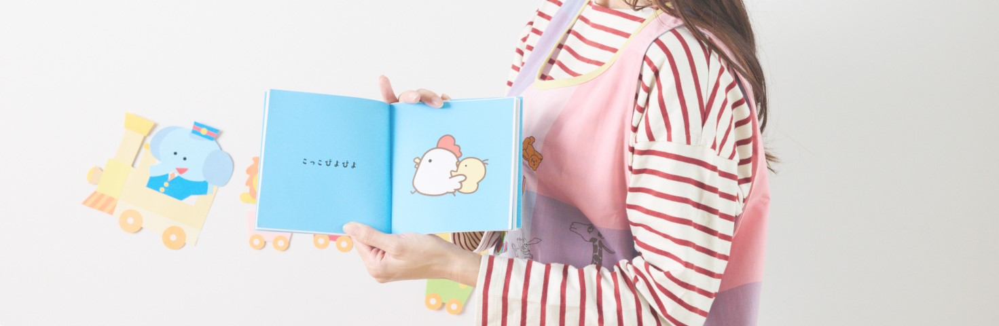

VISION
山形からインクルージョンを発展させていく

行動指針
1. 計画をもつ： 何事にも計画を立てて、見通しをもとう。
2. 熟考する ： 焦らず、深く考えよう。
3. 敬意を持つ： 相手に敬意を持ってコミュニケーションを取り続けよう。
4. 素直になる： 分からないことがあれば素直に人に聞こう。
5. 支え合う ： お互いに助け合いながら取り組もう。
子どもへの養育活動をとおして、地域の学校や近所などの地域社会とつながることが、
子ども自身が自分の未来を創造できる土壌となることを信じ、子どもの成長と地域の発展に寄与します。
山形からインクルージョンを発展させていく
1. 計画をもつ： 何事にも計画を立てて、見通しをもとう。
2. 熟考する ： 焦らず、深く考えよう。
3. 敬意を持つ： 相手に敬意を持ってコミュニケーションを取り続けよう。
4. 素直になる： 分からないことがあれば素直に人に聞こう。
5. 支え合う ： お互いに助け合いながら取り組もう。

１．スモールステップで進めます。
発達段階、特徴に合わせて、できることから少しづつ提供していきます。
２．客観的視点を持ちます。
指導員側の関わり方が、子どもにどう影響を与えるのか？を常に意識しながら
療育に携わります。
３．指導員同士の連携を大切にします。
子どもになにを経験してもらいたいのか、目的を一致させるために日頃の連携を
大事にします。
４．子どもの主体性を大切にします。
選択肢を提供したり、環境を整えたり、子どもが物事を決められるように
サポートします。
そして、子どもが決断した後のアフターフォローまでサポートします。

自分で決める数々の体験が、将来の自己選択・自己決定力の種となる。
失敗してもいい。立ち止まってもいい。時には交わしたっていい。
でも私たちは、子どもたちの成長を信じています。
そしてそれは子供自らが決め、選択し、自分なりの答えを見つけられる機会
があることで育まれると信じて。
たくさんの経験がミライへつながりますように。
ミライスクールでは成長の際に起きる壁に対し、療養者とともに立
ち向かう
だけでなく、どうしたらいいのかを共に考え、決断する機会をたく
さん経験させていきます。
大丈夫、また一緒に始めよう。
私たちミライスクールは子どもたちのミライに責任をもつ集団です。
その他、ご意見・お問い合わせはこちら。